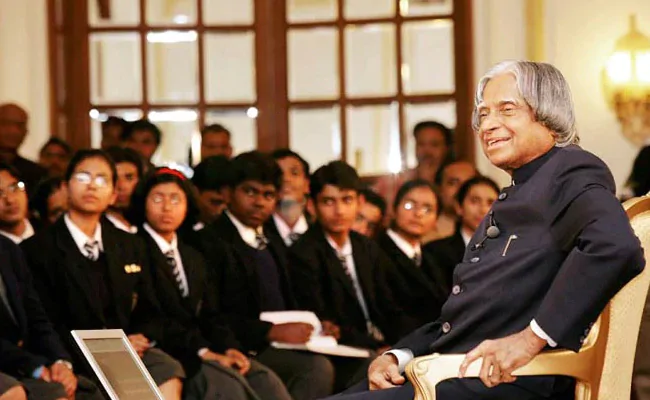

Dr. A.P.J. Abdul Kalam
" Missile Man of India , The People's President "

Kalam Sir with Students
Here's a time-line of his Life..
A very simple person who lived an unpretentious lifestyle. He had a keen interest in literature and wrote poems. He never married. He always faced media himself for his failures while let others address for the success. He remained active till the very end. He died while delivering a lecture at the IIM.
- 1931Born in Rameswaram, Tamil Nadu.
- 1954Graduated in Physics from University of Madras.
- 1960Graduated in Aerospace Engineering from Madras Institute of Technology.
- 1961Joined DRDO as a scientist.
- 1969Joined Space Research at ISRO.
- 1980Became the project Director for India's First Indegenous Satellite Program.
- 1980Was involved in the development of several Indegenous Missiles for India like Agni, Prithvi.
- 1981Awarded Padma Bhushan.
- 1990Awarded Padma Vibhushan.
- 1992Chief Advisor for the India's Nuclear Program.
- 1997Awarded Bharat Ratna.
- 2002Became 11th President of India.
- 2015The People's President passed away on July 27, 2015 after collapsing during a lecture at the Indian Institute of Management in Shillong.
Books written by him..
- Developments in Fluid Mechanics and Space Technology (A P J Abdul Kalam and Roddam Narasimha)
- India 2020: A Vision for the New Millennium (A P J Abdul Kalam, Y. S. Rajan)
- Wings of Fire: An Autobiography (A P J Abdul Kalam, Arun Tiwari)
- Ignited Minds: Unleashing the Power Within India (A P J Abdul Kalam)
- The Luminous Sparks (A P J Abdul Kalam)
- Inspiring Thoughts (A P J Abdul Kalam)
- Turning Points: A journey through challenges (A P J Abdul Kalam)
- You Are Born To Blossom: Take My Journey Beyond (A P J Abdul Kalam and Arun Tiwari)
- Mission India (A P J Abdul Kalam, Paintings by Manav Gupta)
- Indomitable Spirit (A P J Abdul Kalam)
- Forge your Future: Candid, Forthright, Inspiring (A P J Abdul Kalam)